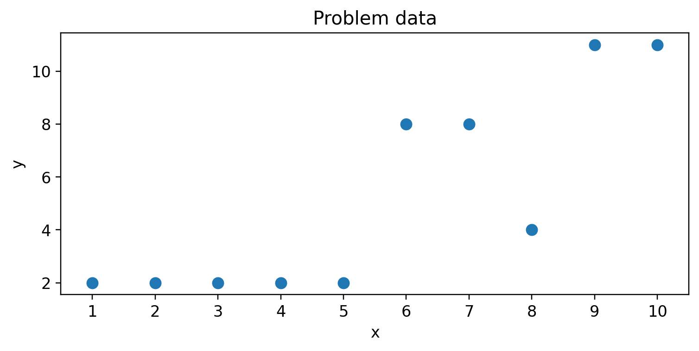
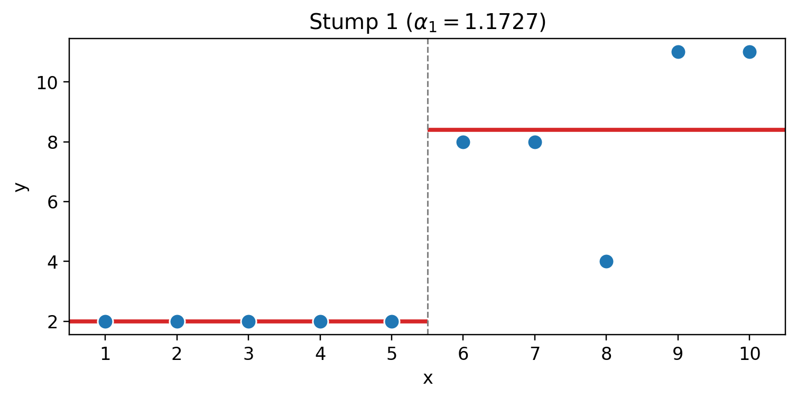
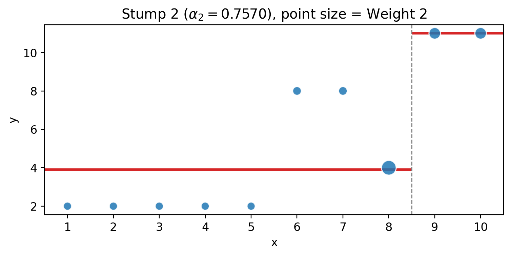
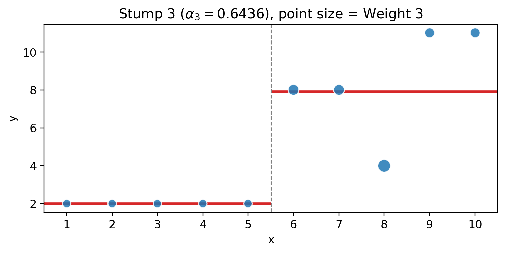
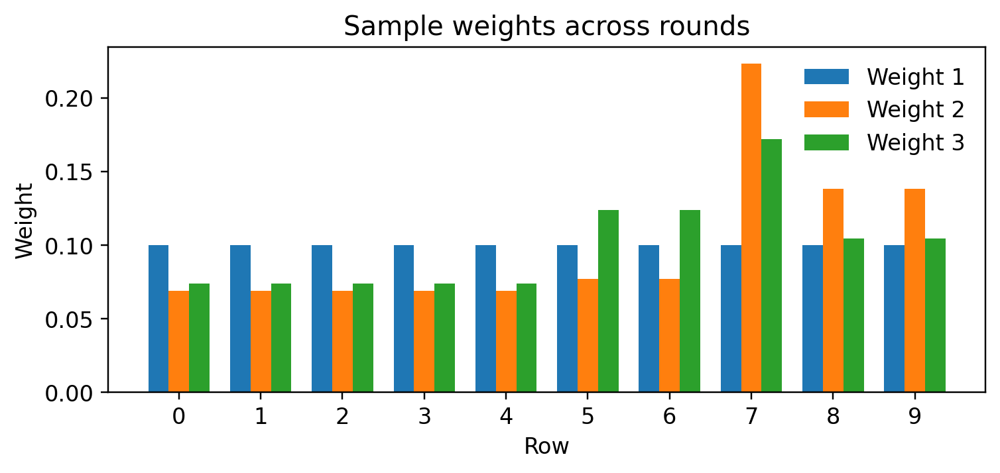
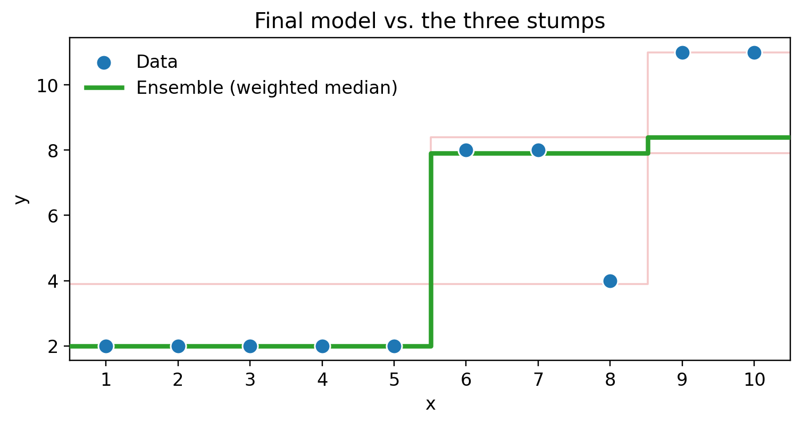

AdaBoost for Regression — Practice Problem
With full solution
Problem
Consider the following regression dataset with one input variable \(x\):
| Row | \(x\) | \(y\) |
|---|---|---|
| 0 | 1 | 2 |
| 1 | 2 | 2 |
| 2 | 3 | 2 |
| 3 | 4 | 2 |
| 4 | 5 | 2 |
| 5 | 6 | 8 |
| 6 | 7 | 8 |
| 7 | 8 | 4 |
| 8 | 9 | 11 |
| 9 | 10 | 11 |
You are given three regression stumps (you do not need to find the splits yourself):
- Stump 1: if \(x \le 5.5\) predict \(2.0\), otherwise predict \(8.4\)
- Stump 2: if \(x \le 8.5\) predict \(3.8948\), otherwise predict \(11.0\)
- Stump 3: if \(x \le 5.5\) predict \(2.0\), otherwise predict \(7.9021\)
Starting with equal sample weights \(w_i = 0.1\), run three rounds of AdaBoost.R2:
Task 1. For each stump \(t = 1, 2, 3\): (a) compute the absolute errors \(|y_i - f_t(x_i)|\), (b) find \(D_t\) (the largest error) and the relative errors \(e_i = |y_i - f_t(x_i)| / D_t\), (c) compute the weighted error \(\epsilon_t = \sum_i w_i e_i\), (d) compute the voting power \(\alpha_t = \ln\!\left(\frac{1 - \epsilon_t}{\epsilon_t}\right)\) (via \(\beta_t = \frac{\epsilon_t}{1 - \epsilon_t}\)), (e) compute the updated sample weights \(w_i \leftarrow w_i \cdot \beta_t^{\,1 - e_i}\) and normalize them to sum to 1.
Task 2. Combine the three stumps with the weighted median (weights \(\alpha_1, \alpha_2, \alpha_3\)). Give the final model’s prediction for every \(x\) region.
Formulas recap: \(e_i = \dfrac{|y_i - f_t(x_i)|}{D_t}\), \(\epsilon_t = \sum_i w_i e_i\), \(\beta_t = \dfrac{\epsilon_t}{1-\epsilon_t}\), \(\alpha_t = \ln\!\left(\dfrac{1}{\beta_t}\right)\), \(w_i \leftarrow \dfrac{w_i \, \beta_t^{1-e_i}}{\sum_j w_j \, \beta_t^{1-e_j}}\).
Solution
Round 1 — Stump 1 (split at \(x \le 5.5\) → \(2.0\) / \(8.4\))
Predictions, errors and relative errors (\(D_1 = 4.4\), Weight 1 \(= 0.1\) for all rows):
| Row | \(x\) | \(y\) | Predicts | \(\lvert\)error\(\rvert\) | \(e_i\) |
|---|---|---|---|---|---|
| 0 | 1 | 2 | 2.0 | 0.0 | 0.0000 |
| 1 | 2 | 2 | 2.0 | 0.0 | 0.0000 |
| 2 | 3 | 2 | 2.0 | 0.0 | 0.0000 |
| 3 | 4 | 2 | 2.0 | 0.0 | 0.0000 |
| 4 | 5 | 2 | 2.0 | 0.0 | 0.0000 |
| 5 | 6 | 8 | 8.4 | 0.4 | 0.0909 |
| 6 | 7 | 8 | 8.4 | 0.4 | 0.0909 |
| 7 | 8 | 4 | 8.4 | 4.4 | 1.0000 |
| 8 | 9 | 11 | 8.4 | 2.6 | 0.5909 |
| 9 | 10 | 11 | 8.4 | 2.6 | 0.5909 |
\[\epsilon_1 = 0.1 \times (0.0909 + 0.0909 + 1.0 + 0.5909 + 0.5909) = 0.2364\]
\[\beta_1 = \frac{0.2364}{1 - 0.2364} = 0.3095, \qquad \alpha_1 = \ln\!\left(\frac{0.7636}{0.2364}\right) = 1.1727\]
New weights \(w_i \cdot \beta_1^{1 - e_i}\) (total \(= 0.4474\)), normalized to Weight 2:
| Row | \(e_i\) | Unnormalized | Weight 2 |
|---|---|---|---|
| 0–4 | 0.0000 | 0.0310 | 0.0692 |
| 5–6 | 0.0909 | 0.0344 | 0.0770 |
| 7 | 1.0000 | 0.1000 | 0.2235 |
| 8–9 | 0.5909 | 0.0619 | 0.1383 |

Round 2 — Stump 2 (split at \(x \le 8.5\) → \(3.8948\) / \(11.0\))
Predictions, errors and relative errors (\(D_2 = 4.1052\)):
| Row | \(x\) | \(y\) | Predicts | \(\lvert\)error\(\rvert\) | \(e_i\) | Weight 2 |
|---|---|---|---|---|---|---|
| 0 | 1 | 2 | 3.8948 | 1.8948 | 0.4616 | 0.0692 |
| 1 | 2 | 2 | 3.8948 | 1.8948 | 0.4616 | 0.0692 |
| 2 | 3 | 2 | 3.8948 | 1.8948 | 0.4616 | 0.0692 |
| 3 | 4 | 2 | 3.8948 | 1.8948 | 0.4616 | 0.0692 |
| 4 | 5 | 2 | 3.8948 | 1.8948 | 0.4616 | 0.0692 |
| 5 | 6 | 8 | 3.8948 | 4.1052 | 1.0000 | 0.0770 |
| 6 | 7 | 8 | 3.8948 | 4.1052 | 1.0000 | 0.0770 |
| 7 | 8 | 4 | 3.8948 | 0.1052 | 0.0256 | 0.2235 |
| 8 | 9 | 11 | 11.0 | 0.0 | 0.0000 | 0.1383 |
| 9 | 10 | 11 | 11.0 | 0.0 | 0.0000 | 0.1383 |
\[\epsilon_2 = 5(0.0692)(0.4616) + 2(0.0770)(1.0) + (0.2235)(0.0256) = 0.3193\]
\[\beta_2 = \frac{0.3193}{0.6807} = 0.4691, \qquad \alpha_2 = \ln\!\left(\frac{0.6807}{0.3193}\right) = 0.7570\]
New weights \(w_i \cdot \beta_2^{1 - e_i}\) (total \(= 0.6207\)), normalized to Weight 3:
| Row | \(e_i\) | Unnormalized | Weight 3 |
|---|---|---|---|
| 0–4 | 0.4616 | 0.0460 | 0.0741 |
| 5–6 | 1.0000 | 0.0770 | 0.1240 |
| 7 | 0.0256 | 0.1069 | 0.1722 |
| 8–9 | 0.0000 | 0.0649 | 0.1045 |

Round 3 — Stump 3 (split at \(x \le 5.5\) → \(2.0\) / \(7.9021\))
Predictions, errors and relative errors (\(D_3 = 3.9021\)):
| Row | \(x\) | \(y\) | Predicts | \(\lvert\)error\(\rvert\) | \(e_i\) | Weight 3 |
|---|---|---|---|---|---|---|
| 0 | 1 | 2 | 2.0 | 0.0 | 0.0000 | 0.0741 |
| 1 | 2 | 2 | 2.0 | 0.0 | 0.0000 | 0.0741 |
| 2 | 3 | 2 | 2.0 | 0.0 | 0.0000 | 0.0741 |
| 3 | 4 | 2 | 2.0 | 0.0 | 0.0000 | 0.0741 |
| 4 | 5 | 2 | 2.0 | 0.0 | 0.0000 | 0.0741 |
| 5 | 6 | 8 | 7.9021 | 0.0979 | 0.0251 | 0.1240 |
| 6 | 7 | 8 | 7.9021 | 0.0979 | 0.0251 | 0.1240 |
| 7 | 8 | 4 | 7.9021 | 3.9021 | 1.0000 | 0.1722 |
| 8 | 9 | 11 | 7.9021 | 3.0979 | 0.7939 | 0.1045 |
| 9 | 10 | 11 | 7.9021 | 3.0979 | 0.7939 | 0.1045 |
\[\epsilon_3 = 2(0.1240)(0.0251) + (0.1722)(1.0) + 2(0.1045)(0.7939) = 0.3444\]
\[\beta_3 = \frac{0.3444}{0.6556} = 0.5254, \qquad \alpha_3 = \ln\!\left(\frac{0.6556}{0.3444}\right) = 0.6436\]

Sample weights across rounds

Combined model — weighted median
Total vote \(= 1.1727 + 0.7570 + 0.6436 = 2.5733\); half \(= 1.2867\).
| \(x\) region | Stump predictions (vote) | Sorted | Cumulative votes | Weighted median |
|---|---|---|---|---|
| \(x \le 5.5\) | 2.0 (1.1727), 3.8948 (0.7570), 2.0 (0.6436) | 2.0, 2.0, 3.8948 | 1.1727 → 1.8163 ≥ 1.2867 | 2.0 |
| \(5.5 < x \le 8.5\) | 8.4 (1.1727), 3.8948 (0.7570), 7.9021 (0.6436) | 3.8948, 7.9021, 8.4 | 0.7570 → 1.4006 ≥ 1.2867 | 7.9021 |
| \(x > 8.5\) | 8.4 (1.1727), 11.0 (0.7570), 7.9021 (0.6436) | 7.9021, 8.4, 11.0 | 0.6436 → 1.8163 ≥ 1.2867 | 8.4 |
Final model: \(F(x) = 2.0\) for \(x \le 5.5\), \(7.9021\) for \(5.5 < x \le 8.5\), \(8.4\) for \(x > 8.5\).
